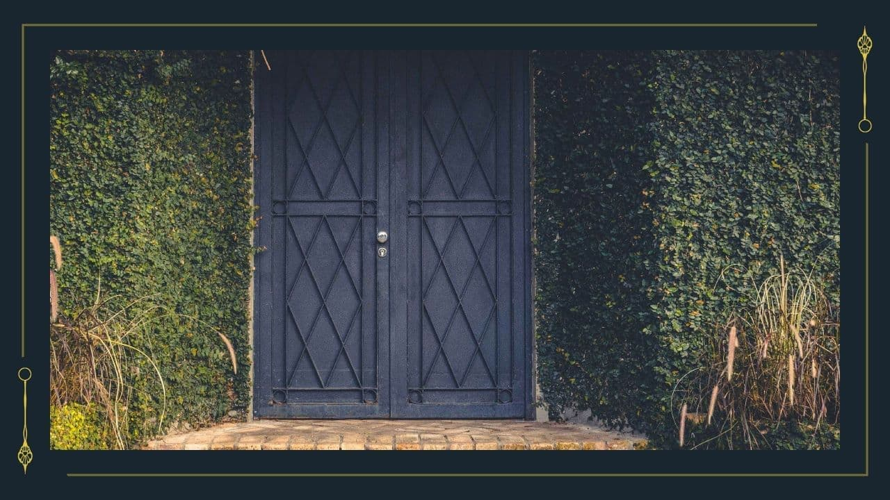

屋敷へ
scene名： 0324_01_屋敷
3月24日。夕方。
目が覚めるとあなたたちは山にいた。最後の記憶はあいまいだ。ひどい豪雨の雨粒が全身にたたきつけられ、目が覚めたのだ。 吹きすさぶ風もひどく、春になった矢先のこの季節には辛いものがある。よりいっそう辺りは暗く、視界が悪くなっていく。
（探索者は全員同じ場所で目を覚まします。もしも、自ら訪れた探索者がいれば倒れた探索者を発見してください。）
辺りを見渡せば不思議な形の洋館が目に入った。このまま悪天候の中をここにいるのも問題だろう。
館に近づけば、扉らしきものに、プレートがかけられていた。
＊プレート＊
「申し訳ございません。この館の正面扉は二重扉となっております。
御用の方はこの扉を開き、そして閉じてから、この先のもう一枚の扉にある呼び鈴を鳴らしてください。」
実際に外の扉を開いたままでは、呼び鈴はならず内側にあるもう一枚の扉も開かない。
雨はひどくなる一方で、また日も沈みよりいっそう暗くなっていく。
扉を閉じて、呼び鈴を鳴らす
目が覚めるとあなたたちは山にいた。最後の記憶はあいまいだ。ひどい豪雨の雨粒が全身にたたきつけられ、目が覚めたのだ。 吹きすさぶ風もひどく、春になった矢先のこの季節には辛いものがある。よりいっそう辺りは暗く、視界が悪くなっていく。
（探索者は全員同じ場所で目を覚まします。もしも、自ら訪れた探索者がいれば倒れた探索者を発見してください。）
辺りを見渡せば不思議な形の洋館が目に入った。このまま悪天候の中をここにいるのも問題だろう。
館に近づけば、扉らしきものに、プレートがかけられていた。
＊プレート＊
「申し訳ございません。この館の正面扉は二重扉となっております。
御用の方はこの扉を開き、そして閉じてから、この先のもう一枚の扉にある呼び鈴を鳴らしてください。」
実際に外の扉を開いたままでは、呼び鈴はならず内側にあるもう一枚の扉も開かない。
雨はひどくなる一方で、また日も沈みよりいっそう暗くなっていく。
扉を閉じて、呼び鈴を鳴らす
>> 〘Next Scene〙をクリック
